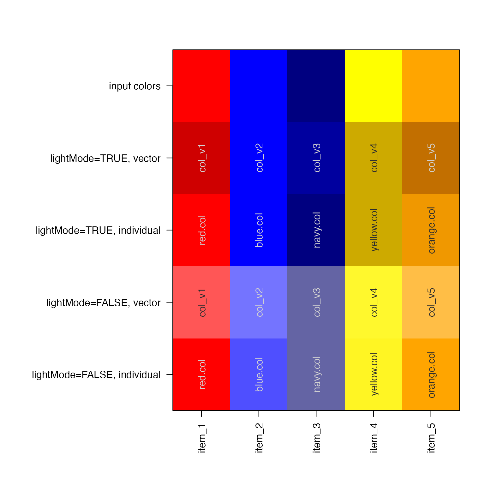

Restrict chroma (C) and luminance (L) ranges for a vector of R colors
applyCLrange(
x,
lightMode = NULL,
Crange = getOption("jam.Crange"),
Lrange = getOption("jam.Lrange"),
Cgrey = getOption("jam.Cgrey"),
fixYellow = TRUE,
CLmethod = c("scale", "floor", "expand"),
fixup = TRUE,
...
)vector of R colors
NULL or logical. When lightMode=NULL then
Crange and Lrange values are used as-is; when lightMode=TRUE
or lightMode=FALSE then default values are used for Crange and
Lrange values, where lightMode=TRUE is intended for colors
to have contrast against a light/bright/white background,
and lightMode=FALSE is intended for colors to have contrast
against a dark background.
NULL or numeric range with minimum and maximum allowed
values for the chroma (C) component.
NULL or numeric range with minimum and maximum allowed
values for the luminance (L) component.
numeric chroma (C) value, which defines grey colors at or
below this chroma. Any colors at or below the grey cutoff will have
their C values unchanged. This mechanism prevents converting black
to red, for example. To disable the effect, set Cgrey=-1.
logical indicating whether to "fix" the darkening of
yellow, which otherwise turns to green. Instead, since JAM can,
JAM will make the yellow slightly more golden before darkening,
which is achieved by calling fixYellowHue().
character string indicating how to alter values
outside the respective Crange and Lrange ranges. "scale" will
rescale values only if any are outside of range, and will rescale
the full range of c(Crange, Cvalues) to c(Crange). In this way,
only values outside the range are rescaled. "floor" will apply a
fixed cutoff, any values outside the range are set to equal the
range boundary itself. "expand" will rescale all values so the
range is equal to Crange.
logical passed to hcl2col() and subsequently
to colorspace::hex() when converting colors outside the color
gamut (visible range.) When fixup is NULL, the hcl2col()
method applies its own aggressive technique to restrict the color
range.
additional argyments are passed to fixYellowHue() when
fixYellow is TRUE.
vector of colors after applying the chroma (C) and luminance (L) ranges.
This function is primarily intended to restrict the range of brightness values so they contrast with a background color, particularly when the background color may be bright or dark.
Note that output is slightly different when supplying one color,
compared to supplying a vector of colors. One color is simply
restricted to the Crange and Lrange. However, a vector of colors
is scaled within the ranges so that relative C and L values
are maintained, for visual comparison.
The C and L values are defined by colorspace::polarLUV(), where C is
typically restricted to 0..100 and L is typically 0..100. For some
colors, values above 100 are allowed.
Values are restricted to the given numeric range using one of three
methods, set via the CLmethod argument.
As an example, consider what should be done when Crange <- c(10,70)
and the C values are Cvalues <- c(50, 60, 70, 80).
"floor" uses jamba::noiseFloor() to apply fixed cutoffs at the
minimum and maximum range. This method has the effect of making all
values outside the range into an equal final value.
"scale" will apply jamba::normScale() to rescale only values outside
the given range. For example, c(Crange, Cvalues) as the initial range,
it constrains values to c(Crange). This method has the effect of
maintaining the relative difference between values.
"expand" will simply apply jamba::normScale() to fit the values
to the minimum and maximum range values. This method has the effect of
forcing colors to fit the full numeric range, even when the original
differences between values were small.
In case (1) above, Cvalues will become c(50, 60, 70, 70).
In case (2) above, Cvalues will become c(44, 53, 61, 70)
In case (3) above, Cvalues will become c(10, 30, 50, 70)
Note that colors with C (chroma) values less than Cgrey will not have
the C value changed, in order to maintain colors at a greyscale, without
colorizing them. Particularly for pure grey, which has C=0, but
is still required to have a hue H, it is important not to increase
C.
Other jam practical functions:
breakDensity(),
checkLightMode(),
check_pkg_installed(),
colNum2excelName(),
color_dither(),
diff_functions(),
exp2signed(),
fileInfo(),
fixYellowHue(),
fixYellow(),
getAxisLabel(),
handleArgsText(),
heads(),
isFALSEV(),
isTRUEV(),
jamba,
jargs(),
kable_coloring(),
lldf(),
log2signed(),
make_html_styles(),
make_styles(),
match_unique(),
mergeAllXY(),
minorLogTicks(),
newestFile(),
printDebugI(),
printDebug(),
renameColumn(),
rmInfinite(),
rmNA(),
rmNULL(),
sclass(),
sdima(),
sdim(),
setCLranges(),
setPrompt(),
ssdima(),
ssdim()
Other jam color functions:
alpha2col(),
col2alpha(),
col2hcl(),
col2hsl(),
col2hsv(),
color2gradient(),
fixYellowHue(),
fixYellow(),
getColorRamp(),
hcl2col(),
hsl2col(),
hsv2col(),
isColor(),
kable_coloring(),
makeColorDarker(),
make_html_styles(),
make_styles(),
rgb2col(),
setCLranges(),
setTextContrastColor(),
showColors(),
unalpha(),
warpRamp()
cl <- c("red", "blue", "navy", "yellow", "orange");
cl_lite <- applyCLrange(cl, lightMode=TRUE);
cl_dark <- applyCLrange(cl, lightMode=FALSE);
# individual colors
cl_lite_ind <- sapply(cl, applyCLrange, lightMode=TRUE);
cl_dark_ind <- sapply(cl, applyCLrange, lightMode=FALSE);
# display colors
showColors(list(`input colors`=cl,
`lightMode=TRUE, vector`=cl_lite,
`lightMode=TRUE, individual`=cl_lite_ind,
`lightMode=FALSE, vector`=cl_dark,
`lightMode=FALSE, individual`=cl_dark_ind))

printDebug(cl, lightMode=TRUE);
#> ## (18:36:42) 31May2022: red,blue,navy,yellow,orange